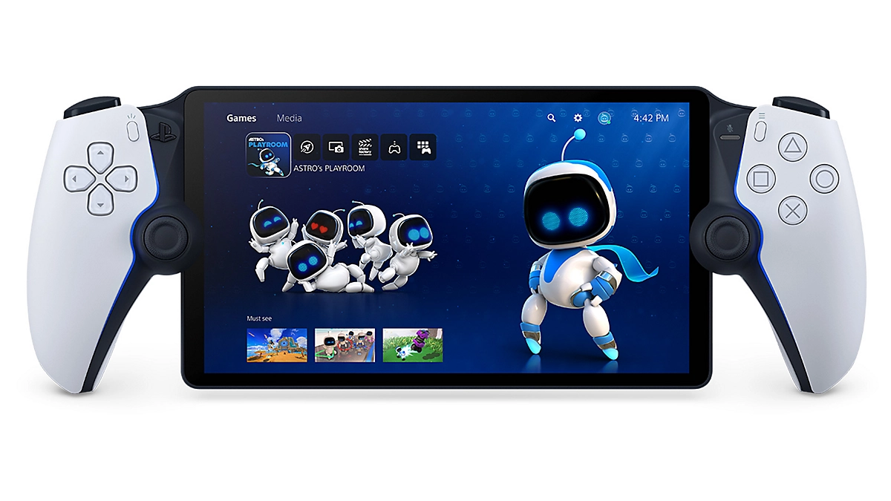

Presentación de la consola PS5 y accessorios
Consola PlayStation5
Disfruta de tiempos de carga mínimos gracias a la SSD de velocidad ultraalta, inmersión más profunda con compatibilidad de retroalimentación háptica1, gatillos adaptativos1 y audio 3D*, y una nueva e increíble generación de juegos de PlayStation.
En determinados juegos de PS5, las vibraciones con gran capacidad de respuesta reaccionan a tus opciones dentro del juego y simulan factores del entorno. Inicia una conversación con el micrófono integrado, cuando necesites centrarte en el juego, apágalo con un botón de silenciado específico.
-
 Revolucion este 2024
Revolucion este 2024
Descubre una nueva generación de juegos increíbles para PlayStation.
-
 Mando inalámbrico DualSense™
Mando inalámbrico DualSense™
Sumérgete aún más en la experiencia de juego gracias a un mando con retroalimentación háptica y gatillos adaptativos que crean efectos dinámicos.
-

Reproductor portátil PlayStation Portal™
Juega a tu consola PS5 a través del wifi de tu casa con una importante calidad de control.
-
 Auriculares inalámbricos PULSE Elite™
Auriculares inalámbricos PULSE Elite™
Disfruta de un audio gaming realista y del cómodo diseño de estos auriculares con micrófono retráctil y una batería de larga duración incorporada.